前言
看完了侯捷大师的课，直接刷题，刷题中自己不知道的东西，总结与此
8.13
函数重载规则
- 函数名需相同
- 参数的个数、参数的顺序和参数的类型不同均可构成重载。
- 在同一作用域
- 返回值类型不同不能构成重载。
- 对实参是否有影响，如volatile/const修饰的指针或引用时，也可以构成重载。
所以这个题目
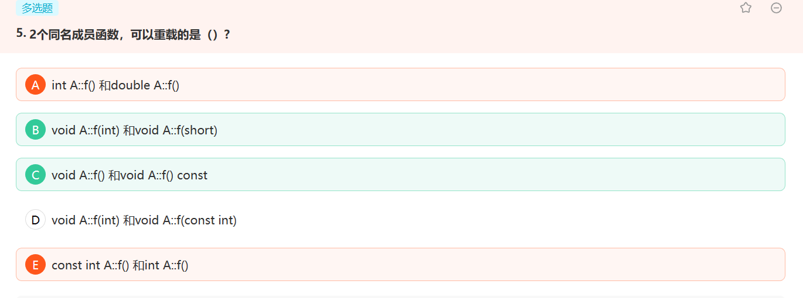
A.返回值不能区分重载函数，只有形参的个数、类型或者顺序可以
B.int和short不一样，所以可以重载
C.const放在函数后面是指这个成员函数为常成员函数，不能修改类里的成员变量，可以起到重载的作用。
D.int和const int都是int类型，区别是后者不能对形参进行修改而已，这样写不可以重载，编译会报错。
E.函数前面加const也起不来重载的作用，其作用在于声明返回的值为cosnt不可修改，绝大多数情况下没啥意义。
PS：声明一个成员函数的时候用const关键字是用来说明这个函数是 "只读(read-only)"函数，也就是说明这个函数不会修改任何数据成 员(object)。 为了声明一个const成员函数，把const关键字放在函数括号的后面。声明和定义的时候都应该放const关键字。
任何不会修改数据成员的函数都应该声明为const类型，如果在编写const成员函数时，不慎修改了数据成员，或者调用了其它非const成员函数，编译器将指出错误，这可以提高程序的健壮性。
关于友元
类的友元函数是定义在类外部，但有权访问类的所有私有（private）成员和保护（protected）成员。尽管友元函数的原型有在类的定义中出现过，但是友元函数并不是成员函数。
友元可以是一个函数，该函数被称为友元函数；友元也可以是一个类，该类被称为友元类，在这种情况下，整个类及其所有成员都是友元。
如果要声明函数为一个类的友元，需要在类定义中该函数原型前使用关键字 friend
所以对于这个题目来说
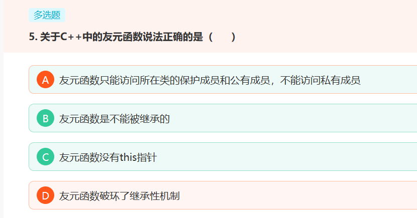
友元函数是不能被继承的，可理解为：你父亲的朋友不一定是你自己的朋友
this指针是指向当前对象的，可以访问当前对象的所有成员，而友元函数是非成员函数，没有this指针
友元函数并没有破坏继承性机制（破坏的是类的封装），因为友元函数是非成员函数，并不会被继承，继承只是继承的成员函数及变量
关于union
union即为联合，它是一种特殊的类。通过关键字union进行定义，一个union可以有多个数据成员
在任意时刻，联合中只能有一个数据成员可以有值。当给联合中某个成员赋值之后，该联合中的其它成员就变成未定义状态了。
union类型的变量在定义时是可以被初始化的，定义如下union类型 union Test { int a; float b; }; Test test = {1}; test变量的定义可以初始化，初始值的类型必须是union中第一个成员的类型
联合变量占有的内存空间是该联合变量中占有最大内存空间的成员在内存对齐时所需的存储空间
所以这一题
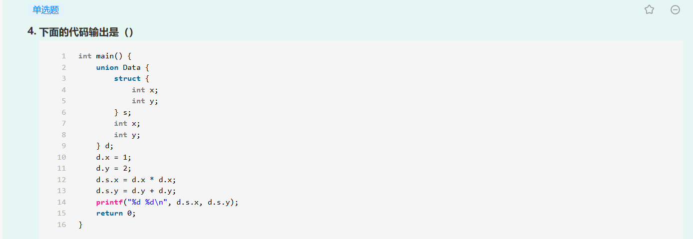
答案为4 8
为什么？
union中的所有成员相对于基地址的偏移量都为零。d.x,d.y和d.s.x的起始地址都相同,共享内存空间，给任意一个变量赋值，其他两个变量也会赋相同的值。
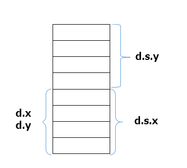
结构体和union不一样，而s.y后定义所以先来后到，s.y在上面
d.x=1；///d.x=d.y=d.s.x=1;
d.y=2;///d.x=d.y=d.s.x=2;
d.s.x=d.xd.x;///d.x=d.y=d.s.x=22=4;
d.s.y=d.y*d.y;///d.x=d.y=d.s.x=4+4=8;
关于成员函数
默认访问权限是private
所以这一题
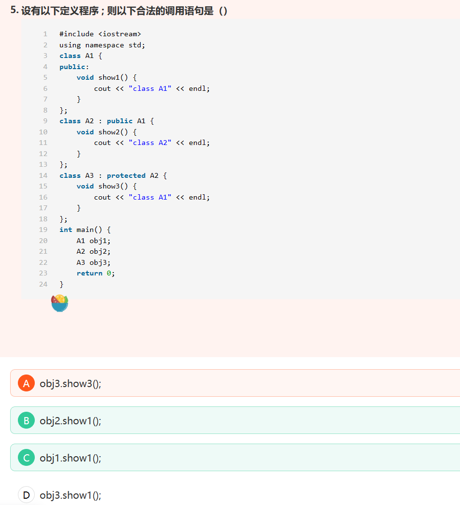
关于虚函数
不能声明为虚函数的有 1、构造函数 2、静态成员函数 3、友元函数 4、内敛函数 (虚函数不可以是内联函数，因为内联函数要在编译期间展开，那样多态性就无法实现。但是虚函数可以声明为inline，这只是一个建议，编译器不会展开它)
假设构造函数为虚函数，而虚函数的调用需要虚表，虚表又由构造函数建立。
这样就矛盾了。 就像儿子生了父亲一样，矛盾。一般析构函数会被定义为虚函数
所以这一题
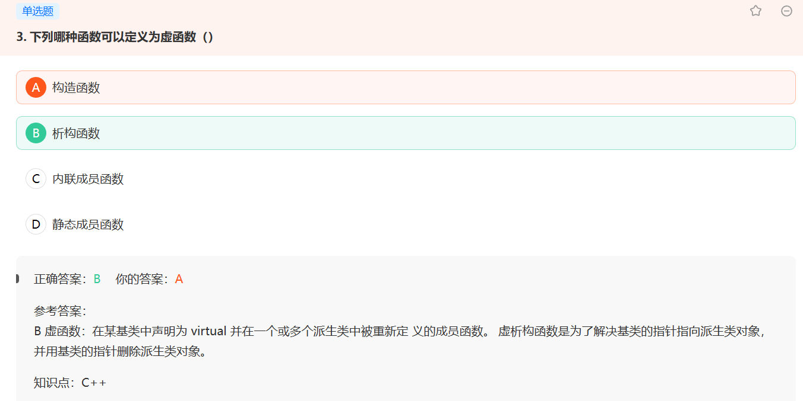
1.构造函数执行时还未创建对象，此时还没有虚函数表。
2.将基类的析构函数声明为虚函数，delete一个指向子类对象的基类指针，实际被执行的是子类的析构函数，而子类的析构函数会自动的调用基类的析构函数，进而保证所有资源都可以释放，防止内存泄露。
3.虚函数不可内联
4.静态成员函数属于类，不属于特定对象，既不会通过虚函数来调用。因为虚函数表位于特定的对象之中
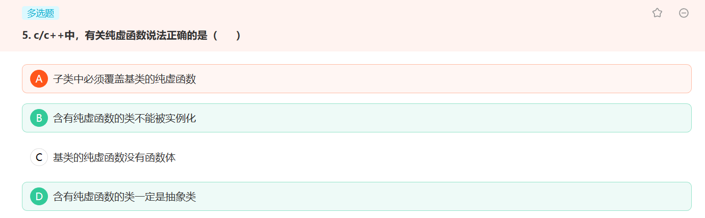
子类中不一定要覆盖基类的纯虚函数
虚函数不可以被重载为内联函数，为什么呢: inline是在编译器将函数类容替换到函数调用处，是静态编译的。 而虚函数是动态调用的，在编译器并不知道需要调用的是父 类还是子类的虚函数，所以不能够inline声明展开，所以编译器会忽略
关于fopen
一图流
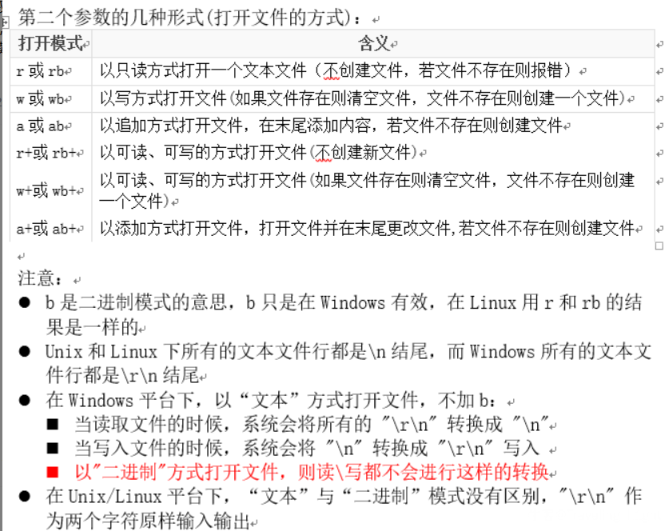
一个坑爹题
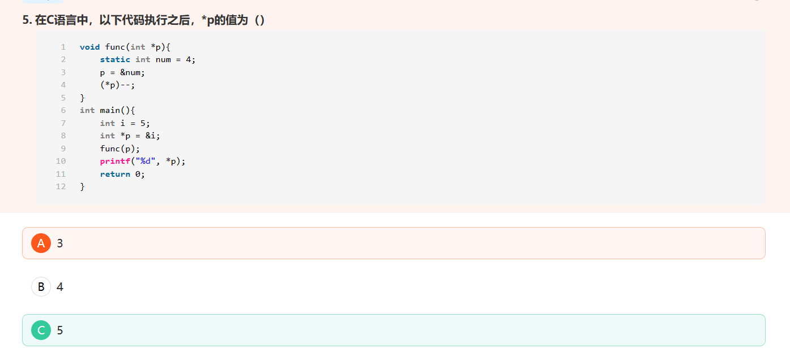
这个题坑在哪，坑就坑在他func的参数也叫p
那么其实
p=&num时，参数p已经变成了num的地址
和main里的p没关系了
关于三目运算符
多个连续三目运算符从右往左运算
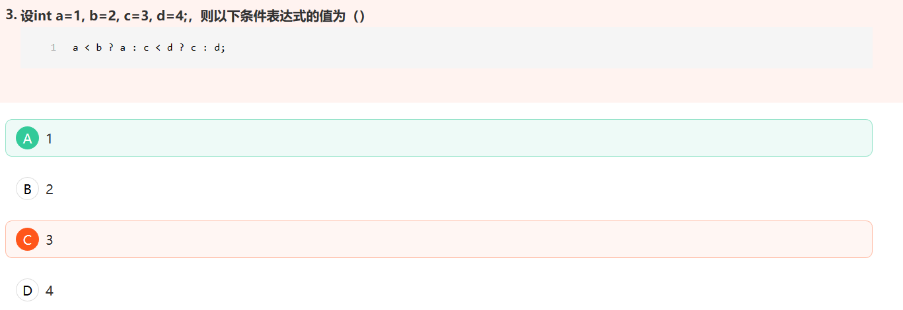
关于函数模板
两个阶段编译
- 在模板定义阶段，模板的检查并不包含类型参数的检查。只包含下面几个方面:
- 语法检查。比如少了分号。
- 使用了未定义的不依赖于模板参数的名称（类型名，函数名，……）。
- 未使用模板参数的 static assertions。
- 在模板实例化阶段，为确保所有代码都是有效的，模板会再次被检查，尤其是那些依赖类型参数的部分
模板类型推断
在类型推断的时候自动的类型转换是受限制的:
如果调用参数是按引用传递的，任何类型转换都不被允许。通过模板类型参数 T 定义的 两个参数，它们实参的类型必须完全一样。
如果调用参数是按值传递的，那么只有退化（decay）这一类简单转换是被允许的：const 和 volatile 限制符会被忽略，引用被转换成被引用的类型，raw array 和函数被转换为相 应的指针类型。通过模板类型参数 T 定义的两个参数，它们实参的类型在退化（decay） 后必须一样
所以这一题
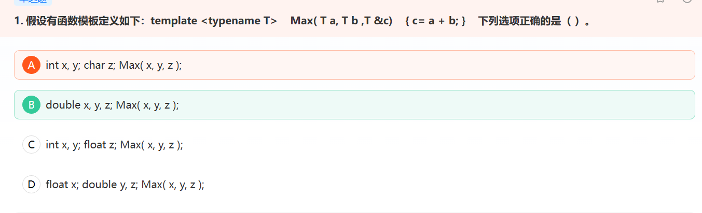
关于抽象类
含有纯虚函数的类被称为抽象类。抽象类只能作为派生类的基类，不能定义对象，但可以定义指针。在派生类实现该纯虚函数后，定义抽象类对象的指针，并指向或引用子类对象。
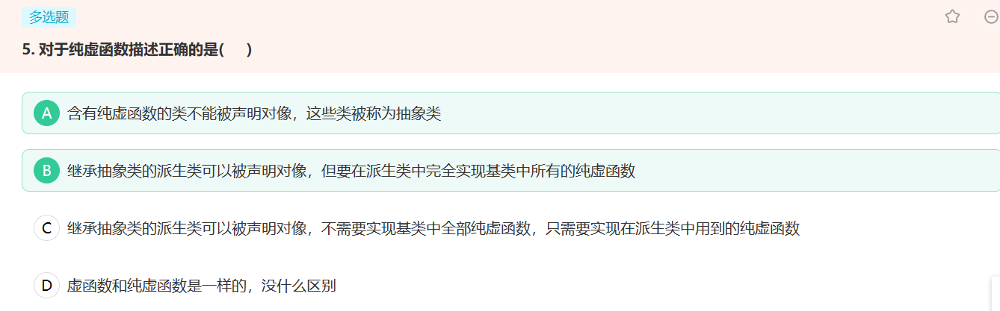
关于回调函数
所谓的回调函数，就是预先在系统的对函数进行注册，让系统知道这个函数的存在，以后，当某个事件发生时，再调用这个函数对事件进行响应。 定义一个类的成员函数时在该函数前加CALLBACK即将其定义为回调函数，函数的实现和普通成员函数没有区别 回调函数不能是特定的类成员函数。因为类成员函数含有this指针
关于输出%
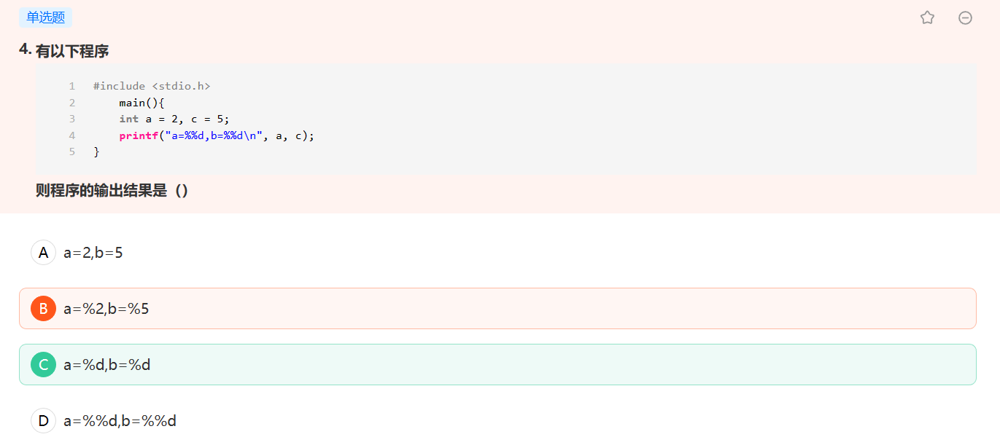
C 语言中用 “%%” 打印输出字符 “%”, 所以 %%d, 输出为 %d 两个普通字符 , 而不是格式控制符 “%d” 的含义 , 所以打印结果为 C
关于二维数组定义

首先，数组定义的时候必须指定大小。指定的含义是指要么你显式地写出数组的长度，或者是让编译器自己通过初始化的元素的个数去计算长度。无论哪种，都是能确定大小的，当数组创建完成后，这个大小就无法改变了。
其次，数组的初始化可以只初始化前面一部分，例如 int a[10] = {1,2,3}。
然后，对于二维数组，如果你指定了行数和列数，那么这种情况最简单，直接用你写的行列数；如果只指定了列数，那么必须有一个初始化列表，然后就会按照列数c和初始化的元素个数n去计算行数，行数r等于n/c的上取整。但如果你不指定列数，C编译器不会给你统计初始化列表然后计算应该有多少列，而且没有初始化列表的根本无法确定行列数。
所以必须有列数。
结构体中的字节对齐和杂七杂八
C 语言的位域（bit-field）是一种特殊的结构体成员，允许我们按位对成员进行定义，指定其占用的位数。
int+名称+冒号+数字”的写法叫“位域”，数字表示占多少位。一个int是4字节32位。
字节对齐：
公式1:前面的地址必须是后面的地址正数倍,不是就补齐
公式2:整个Struct的地址必须是最大字节的整数倍
所以这个题目
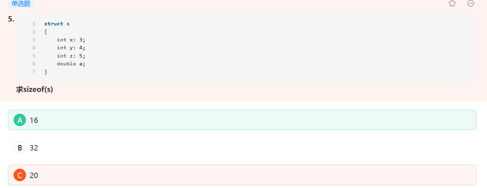
xyz，3+4+5=12位
double8字节，
12位小于8字节，补成8字节
8+8=16
动态联编和静态联编
其实就是动态链接和静态链接
- 静态联编 ：指在编译阶段就将函数实现和函数调用关联起来，也叫早绑定。
- 动态联编：在程序执行的时候才将函数实现和函数调用关联。因此也叫晚绑定，一般情况下都是静态联编，涉及到多态和虚拟函数就必须使用动态联编了
隐藏
隐藏是指派生类的成员函数遮蔽了与其同名的基类成员函数，具体规则如下
(1) 派生类的函数与基类的函数同名，但是参数列表有所差异。此时，不论有无virtual关键字，基类的函数在派生类中将被隐藏。(注意别与重载混合)
(2)派生类的函数与基类的函数同名，参数列表也相同，但是基类函数没有virtual关键字。此时，基类的函数在派生类中将被隐藏。(注意别与覆盖混合)
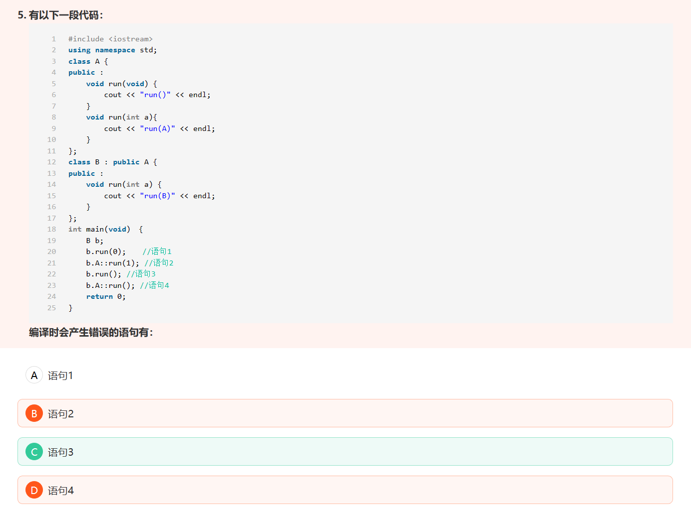
所以这一题，属于第一种情况
数组的地址
在定义数组的函数里，对数组名取地址+1，表示加整个数组的长度
所以这一题

数组名是数组这种类型的变量名，所以对数组名取地址是取的整个数组的地址，所以&a+1自然要跨过整个数组的长度，本题即跨过2*5 = 10个int的长度。
类的大小
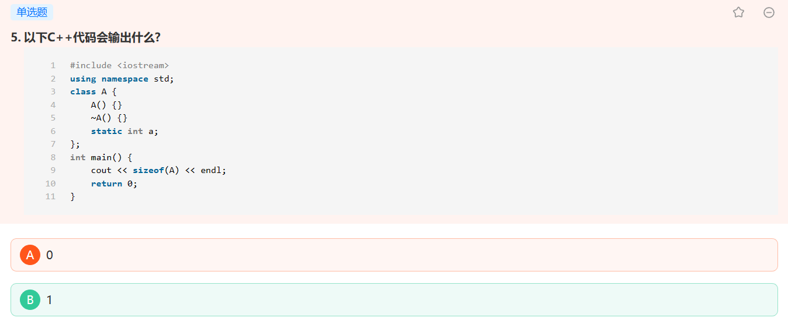
类的大小实际是指该类对象的大小。为类所有非静态数据成员的大小之和，需要内存对齐。不包括静态数据成员，不包括函数成员。但若定义了虚函数，则需要加上虚指针的大小。类的大小不能为0，由前述规则计算出类大小为0时，实际大小为1。本题中只有静态数据成员，没有非静态数据成员，所以大小为1。
不能被重载的操作符
大部分的操作符是可以被重载的，例外的只有“.”、“::”、“?:”和“sizeof”
不能被友元函数重载
C++规定=，[ ]，()，->这四个运算符只能被重载为类的非静态成员函数，其他的可以被友元重载，主要是因为其他的运算符重载函数都会根据参数类型或数目进行精确匹配，这四个不具有这种检查的功能，用友元定义就会出错。
只能使用成员函数重载
只能使用成员函数重载的运算符有：=、()、[]、->、new、delete
关于return
return只能返回一个值
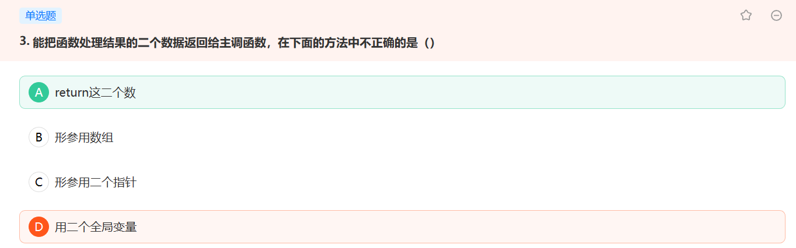
函数传递数组
函数传递时数组退化为指针
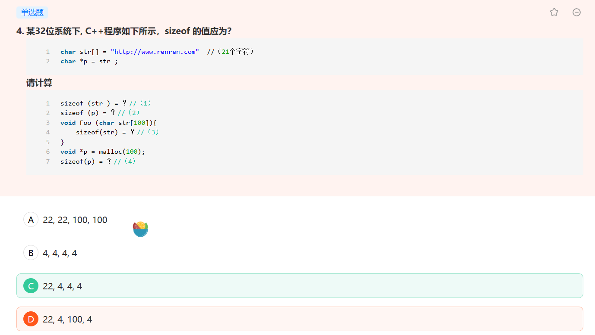
字符串中的\
\0表示字符串结束
\\表示单个字符\
\数字表示数字的ASCII代表的字符
所以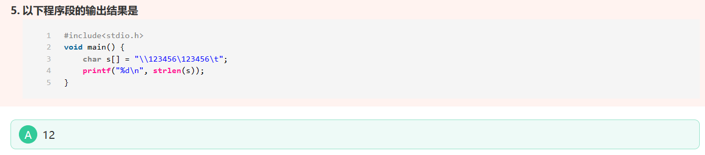
enum
枚举是 C 语言中的一种基本数据类型，用于定义一组具有离散值的常量。，它可以让数据更简洁，更易读。
枚举类型通常用于为程序中的一组相关的常量取名字，以便于程序的可读性和维护性。
定义一个枚举类型，需要使用 enum 关键字，后面跟着枚举类型的名称，以及用大括号 {} 括起来的一组枚举常量。每个枚举常量可以用一个标识符来表示，也可以为它们指定一个整数值，如果没有指定，那么默认从 0 开始递增。
在函数外部访问枚举，值为0，函数内部访问则为其中的随机数
所以这一题
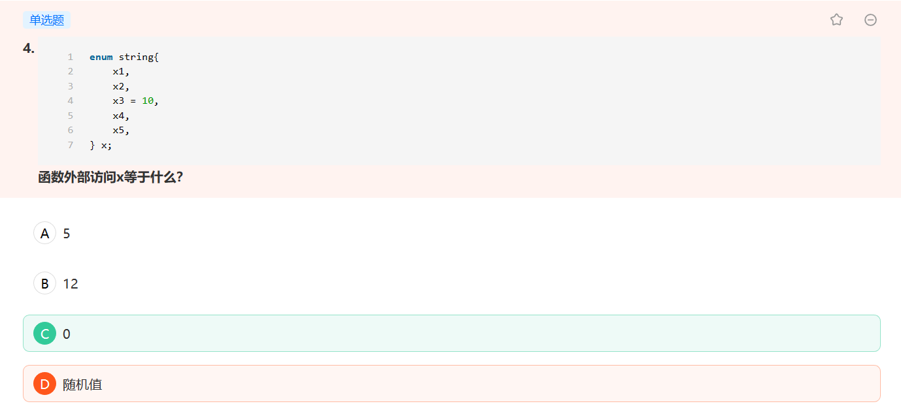
x1=0,x2=1,x3=10,x4=11,x5=12
但是题目问的是外部访问，所以x=0
malloc/free和new/delete的区别
共同点是：
都是从堆上申请空间，并且需要用户手动释放。
不同的地方是：
malloc和free是函数，new和delete是操作符
malloc申请的空间不会初始化，new可以初始化
malloc申请空间时，需要手动计算空间大小并传递，new只需在其后跟上空间的类型即可。
malloc的返回值为void*, 在使用时必须强转，new不需要，因为new后跟的是空间的类型。
malloc申请空间失败时，返回的是NULL，因此使用时必须判空，new不需要，但是new需要捕获异常。
申请自定义类型对象时，malloc/free只会开辟空间，不会调用构造函数与析构函数，而new在申请空间后会调用构造函数完成对象的初始化，delete在释放空间前会调用析构函数完成空间中资源的清理。
sizeof数组名
返回数组所占的字节数
浮点数比较问题
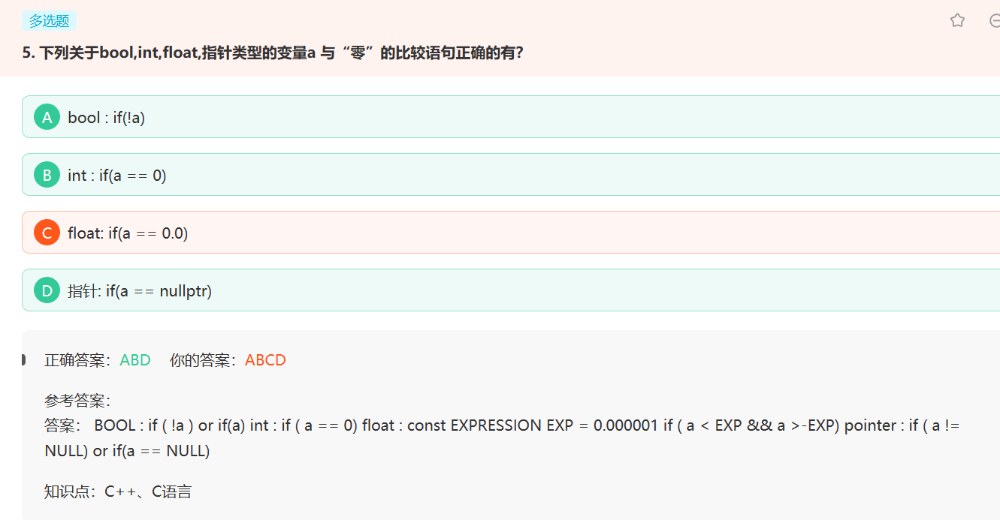
由于计算机二进制表示浮点数有精度的问题，0.0(浮点double)实际上不是0，而是非常接近零的小数，所以C错！
不要用对浮点数进行等于和不等于的判断，那样得不到正确结果
float 尾数的位数决定float 精度的有效位数为 7位，所以0.0不能表示 float为0的数
8.15
关于原子操作
赋值是原子操作，不要上锁
所以
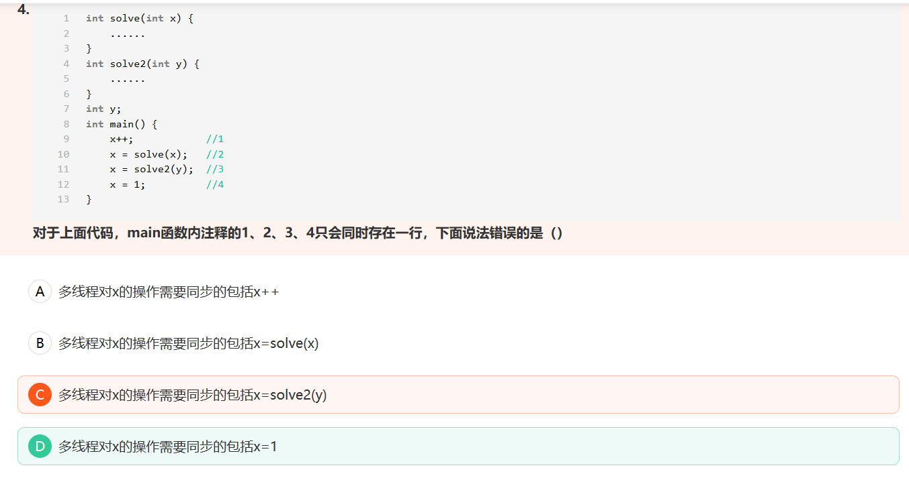
关于宏定义
- 宏定义的常量是在预处理阶段展开，const常量是在编译运行阶段使用
- 宏定义的常量没有类型，不做任何类型检查;const常量是有具体类型的，在编译运行阶段会做类型检查.
- 为了代码健壮性起见，还是尽量使用const。
构造函数初始化列表
C++ Primer中在讲构造函数初始化列表的时候有这么一段话：
无论是在构造函数初始化列表中初始化成员，还是在构造函数体中对它们赋值，最终结果是相同的。不同之处在于，使用构造函数初始化列表的版本初始化数据成员，没有定义初始化列表的构造函数版本在构造函数体中对数据成员赋值。

第一种：1.先调用复制构造函数给形参a赋值 2.调用默认构造函数初始化子对象 3.进行对象赋值的操作。 第二种：1.和第一种一样首先调用复制构造函数给形参a赋值 2.根据初始化列表调用复制构造函数将a复制给mA。 一般情况下：复制构造函数<默认构造函数+赋值操作函数。
const和#define定义常量的区别
就定义常量说的话：
const 定义的常数是变量 也带类型， #define 定义的只是个常数 不带类型。就起作用的阶段而言：
define是在编译的预处理阶段起作用，而const是在 编译、运行的时候起作用。就起作用的方式而言：
define只是简单的字符串替换，没有类型检查。而const有对应的数据类型，是要进行判断的，可以避免一些低级的错误。define预处理后占用代码段空间 ，const占用数据段空间
从代码调试的方便程度而言：
const常量可以进行调试的，define是不能进行调试的，因为在预编译阶段就已经替换掉了从是否可以再定义的角度而言：
const不足的地方，是与生俱来的，const不能重定义，而#define可以通过#undef取消某个符号的定义，再重新定义。从某些特殊功能而言：
define可以用来防止头文件重复引用，而const不能
引用标准库的两种写法
include
include “file” //先在当前目录中搜索文件，然后再到默认搜索目录中搜寻。
所以用<>更快
赋值语句的返回值
赋值语句的返回值为等号右侧的数值，所以a=0返回值为0。
引用的本质
引用等价于* const ptr，也就是对一个指针常量取值，指针才能指向内存地址，这也解释了引用为什么必须要初始化，且后面无法修改引用。int a =10; int& r = a；在编译器底层就已经替换成r = *const ptr = (&a)，这就解释了为什么对引用取地址和原变量相等，看起来变量和引用使用相同的地址，因为&(&)a= ptr = &a。
cin
cin是istream的类对象
const修饰指针
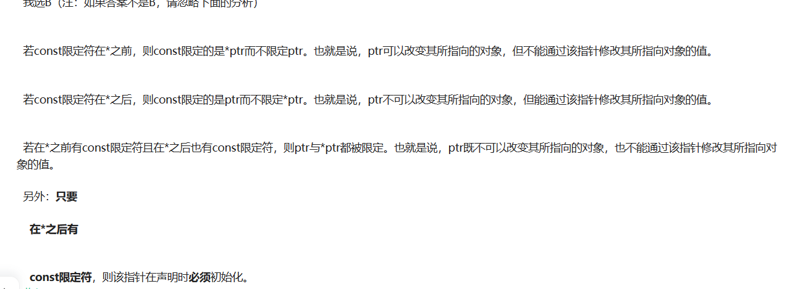
所以这一题
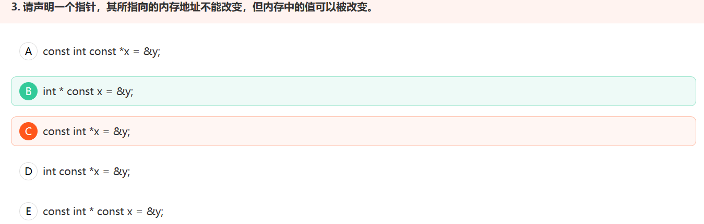
const在*的左边，则指针指向的变量的值，不可直接通过指针改变（可以通过其他途径改变）；
在*的右边，则指针的指向不可变。 简记为“左定值，右定向”。
强制类型转换
不是四舍五入
构造和析构的调用顺序
构造函数调用顺序：基类构造函数->子类成员变量构造函数->子类构造函数
析构函数调用顺序：子类析构函数->子类成员变量析构函数->基类析构函数
组合派生类的构造函数构造顺序为：初始化基类成员->初始化新增对象成员->初始化新增非对象成员
同时组合派生类具有多个新增对象成员的时候，按照类中的声明顺序来初始化对象成员。
关于switch(c)
switch语句后的控制表达式只能是short、char、int、long整数类型和枚举类型，不能是float，double和boolean类型
关于虚函数的大小
虚函数共享一块存储区域
一个虚函数4字节
所以这一题
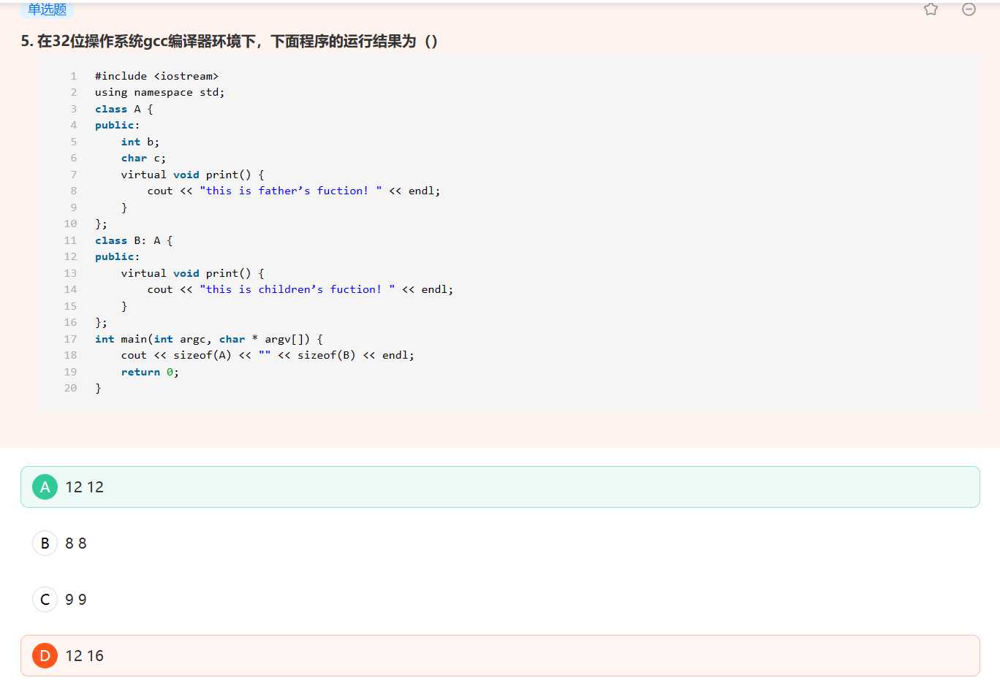
选A 答案解析：类的大小只与成员变量（非static数据成员变量）和虚函数指针有关，还要考虑到对齐. 那么类A的大小等于4个字节 + 4个字节（考虑对齐） + 4个字节（指向虚函数的指针）=12字节； 类B的大小就是等于类A的大小12个字节. 因为在基类中存在虚函数时，派生类会继承基类的虚函数，因此派生类中不再增加虚函数的存储空间（因为所有的虚函数共享一块内存区域），而仅仅需要考虑派生类中添加进来的非static数据成员的内存空间大小。所以类B大小为12B
然后还有这一题
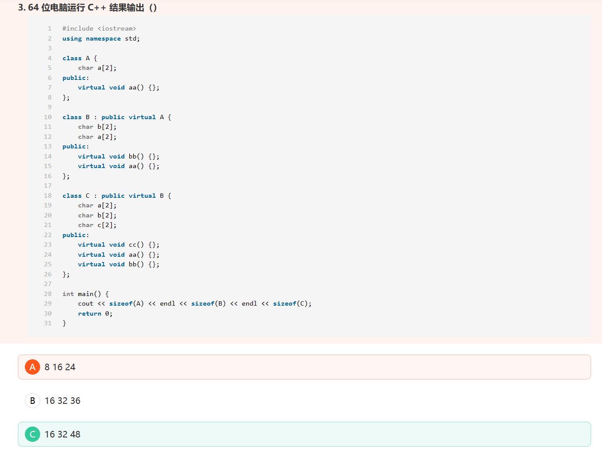
64位指针是8个字节。
子类大小要加上所有的基类大小
对于对象 A，包含一个虚函数指针，因此对齐到 8 字节，然后有 2 个 char 型，最后补齐到 8 字节整倍数，因此其长度为 16 。
对于对象 B，包含一个虚函数指针，也是对齐到 8 字节，然后是 4 个 char 型，最后补齐到 8 字节整倍数，变成 16 字节。然后加上对象 A 的大小，共计 32 字节。
对于对象 C，包含一个虚函数指针，也是对齐到 8 字节，然后是 6 个 char 型，最后补齐到 8 字节整倍数，变成 16 字节。然后加上对象 B 的大小，共计 48 字节。
继承后子类对基类成员的访问
基类成员在派生类的访问属性取决于继承方式以及这些成员本来在基类中的访问属性。 (1)基类的私有成员无论何种继承方式在派生类中均不可直接访问。 (2)在公有继承方式下，基类的保护和公有成员在派生类中均保持原访问属性。 (3)在保护继承方式下，基类的保护和公有成员在派生类中的访问属性均为保护属性。 (4)在私有继承方式下，基类的保护和公有成员在派生类中的访问属性均为私有属性。
虚函数的强制类型转换
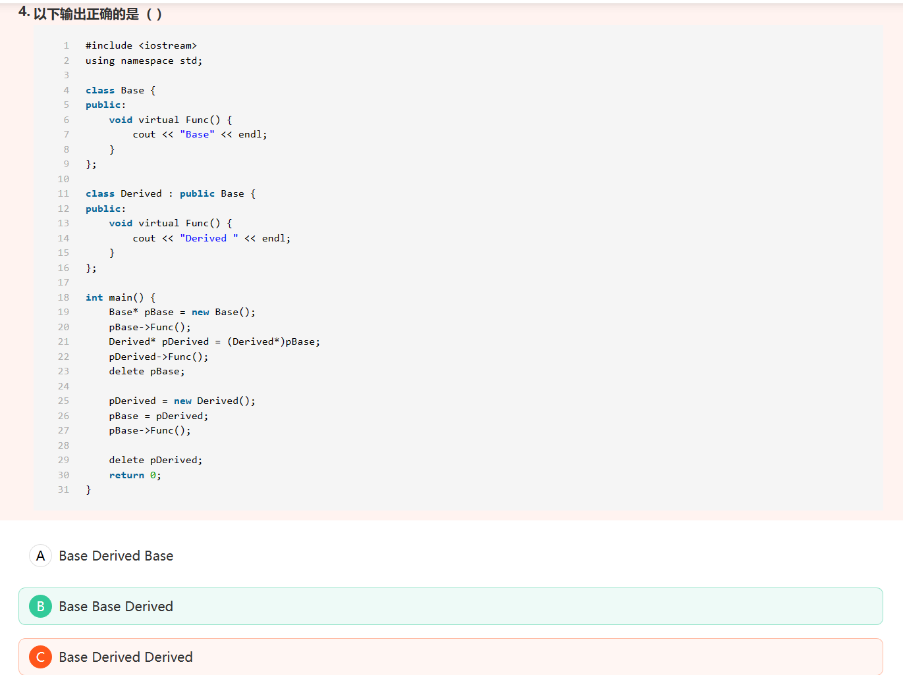
对于2，强制类型转换时会将Base类型的数据所在的内存按照Derived类型格式解析和转换。pDerived解析得到的是pBase的虚函数表，相当于pDerived的vtbl虚函数表指针指向了pBase的虚函数表，故得到Base;
数组名和指针
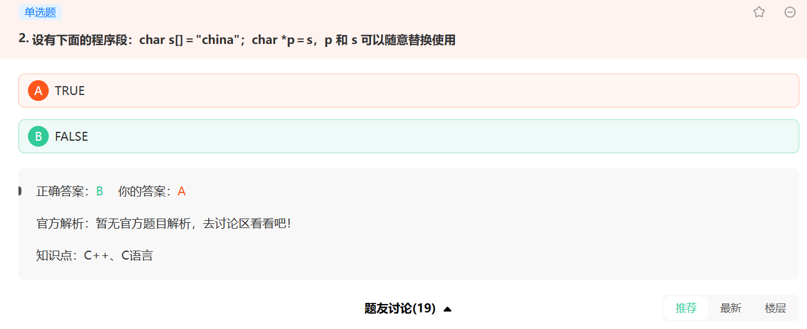
数组名作为指针是一个常量，不能和变量指针等同
数组指针更像是指针的一个真子集，主要用于数组，所以范围更窄，而指针是可以用于数组乃至更广的地方，同时由于数组指针针对的是数组，所以有些方面可能会有特权（这是编译器实现的），比如使用sizeof（数组指针）和sizeof(指针），前者是数组长度*指针的范围（以字节为单位，win32程序就是4），而指针就只是指针的范围。
常用友元运算符的解释
a+b 编译器解释：operator+(a,b) 本类解释： a.operator+(b)
-a 编译器解释：operator-(a) 本类解释： a.operator-()
a++ 编译器解释：operator++(a,0) 本类解释： a.operator++(0)
–a 编译器解释： operator–(a) 本类解释：a.operator–();
所以这一题
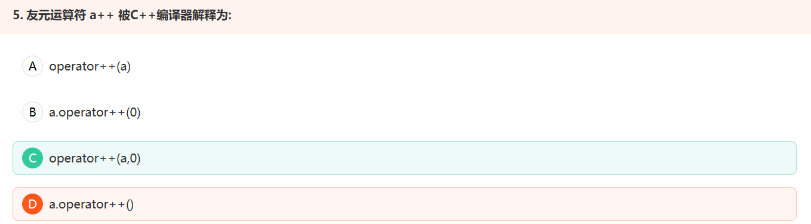
字符串的返回值
字符串的返回值是指针，所以这一题
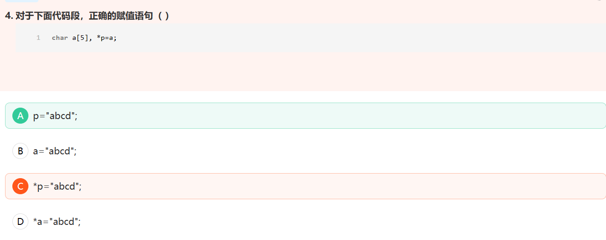
基本数据类型的等级
基本数据类型的等级从低到高如下：char int long float double运算的时候是从低转到高的，表达式的类型会自动提升为参与表达式求值的最上级类
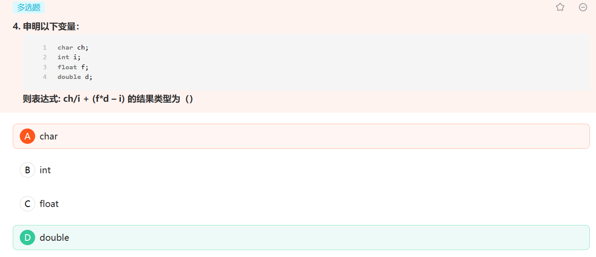
逗号表达式
整个表达式的值为最后一个表达式的值
8.16
一个题目
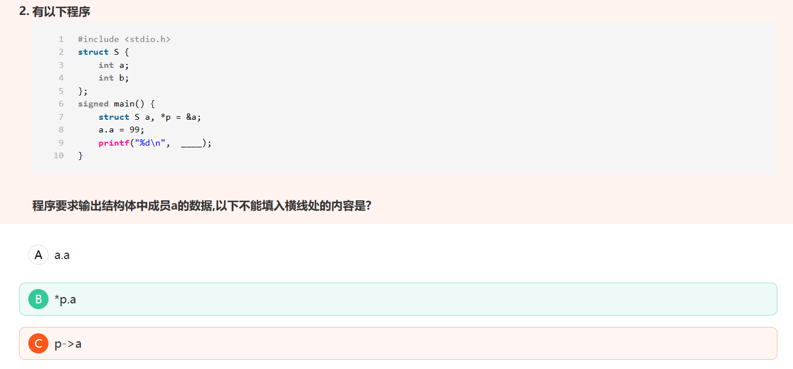
struct S a, *p = &a; #定义一个结构体对象a，同时定义一个指向结构体对象a的指针变量p。 *
*p->a ：表示p当前指向的是对象a中的a成员。
*(p).a : 也是对象a中的成员a，因为（p）就是对象a。从(*p).a 表示是对象a下的成员a。
p.a : 由于.的优先级大于，因此这个表达方式等同于*（p.a）,显然表达式错误的。
设置虚基类的目的
消除二义性
二维数组指针++
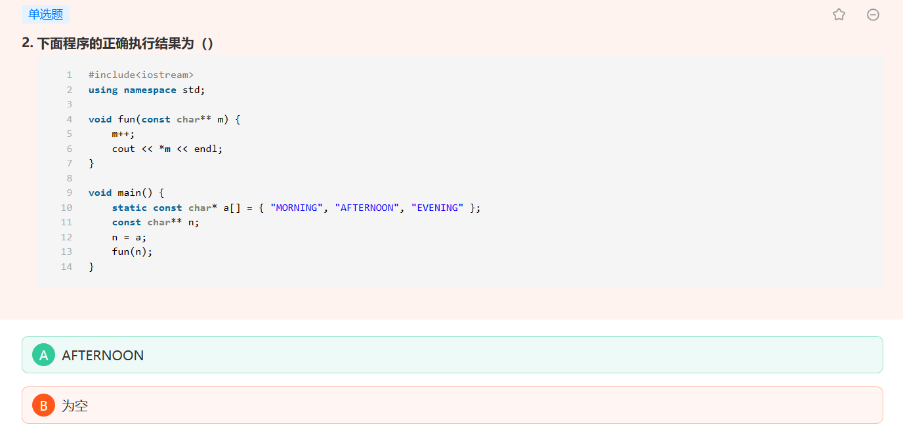
char* a[]代表的是a是一个数组，a里面的元素是字符指针。则m为指向字符指针的指针，m++则m指向下一个字符指针，然后*m就是提取当前指向的字符指针所指向的内容，也就是AFTERNOON。应该是这样吧 ..
m++等价于m=m+1，指向m[1]地址；
如果m=&m+1，则认为加上二维数组整个大小，因此为空
空类自动产生函数
默认构造函数、默认拷贝构造函数、默认析构函数、默认赋值运算符重载
这四个是我们通常大都知道的。
但是除了这四个，还有两个
那就是取址运算符重载和 取址运算符重载 const
动态绑定
#include<bits/stdc++.h>
using namespace std;
class CA
{
public:
virtual void f1()
{
cout<<"CA::f1( )"<<endl;
f2();
}
void f2()
{
cout<<"CA::f2( )"<<endl;
}
};
class CB : public CA
{
public:
void f1()
{
cout<<"CB::f1( )"<<endl;
f2();
}
void f2()
{
cout<<"CB::f2( )"<<endl;
}
};
class CC:public CB
{
public:
virtual void f2()
{
cout<<"CC:f2()"<<endl;
}
};
int main()
{
CC c;
CA *pA = &c ;
pA->f1();
return 0;
}结果为：CB::f1() CB::f2()
答案是B。
CA* pa = &c;这句话是父类指针指向子类对象，调用pa->f1()时，因为父类中的f1()是虚函数，所以将发生动态绑定，调用子类CB中的f1()函数，先输出CB::f1()
在CB类的f1()函数中，调用非虚函数f2()，但因为其父类CA中的f2()函数并不是virtual函数，所以将调用CB类中的f2()函数，输出CB::f2()。如果将CA类中的f2()改成虚函数，那么将输出CC::f2()；如果将CB类中的f2()改成虚函数，也将输出CC::f2(),这是满足动态绑定的。
define的使用
#define是直接的字符串替换，所以（）也会替换下来
所以这一题
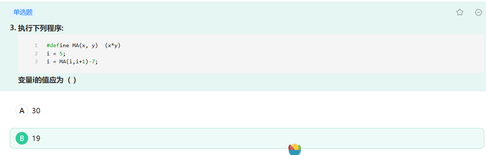
MA(i,i+1)=i*i+1=26
26-7=19
什么时候调用构造函数
只有给对象分配空间才调用构造函数和析构函数，指针并没有new一个新的对象，因此不会调用构造函数和析构函数
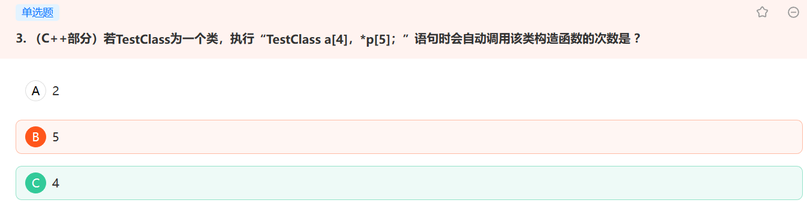
二级指针const
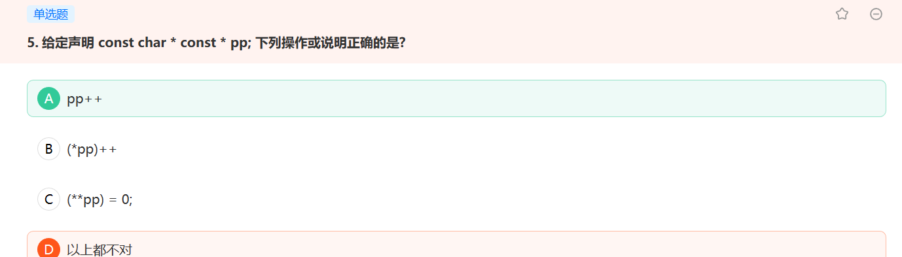
const 限定一个对象为只读属性。
先从一级指针说起吧：
（1）const char p 限定变量p为只读。这样如p=2这样的赋值操作就是错误的。
（2）const char p p为一个指向char类型的指针，const只限定p指向的对象为只读。这样，p=&a或 p++等操作都是合法的，但如p=4这样的操作就错了，因为企图改写这个已经被限定为只读属性的对象。
（3）char const p 限定此指针为只读，这样p=&a或 p++等操作都是不合法的。而p=3这样的操作合法，因为并没有限定其最终对象为只读。
（4）const char *const p 两者皆限定为只读，不能改写。
有了以上的对比，再来看二级指针问题：
（1）const char p p为一个指向指针的指针，const限定其最终对象为只读，显然这最终对象也是为char类型的变量。故像p=3这样的赋值是错误的，而像*p=？ p++这样的操作合法。
（2）const char * const *p 限定最终对象和 p指向的指针为只读。这样 *p=?的操作也是错的。
（3）const char * const * const p 全部限定为只读，都不可以改写
->相当于
对象.成员名，对象指针－〉成员名
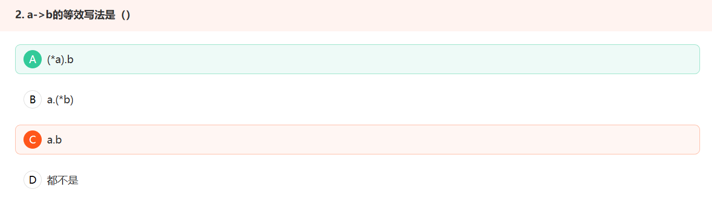
常量定义
必须在声明中对常量初始化，否则该常量值不确定且无法修改
运算符分类
！属于逻辑运算符
1.算术运算符： - + / %
2.关系运算符： > < == != >= <=
3.逻辑运算符：! && ||
4.位运算符：<< >> ~ | ^ &
5.赋值运算符：=及扩展赋值运算符
6.条件运算符：?:
7.逗号运算符：,
8.指针运算符：和&
9.求字节数运算符：sizeof
10.强制类型转换运算符：(类型)
11.分量运算符：. ->
12.下标运算符：[ ]
函数指针数组和数组指针函数
这一题

[]优先级最高，s[5] 为数组，看成一个整体x
接着(*x)是指针，再看成一个整体x
void x(int)，为一个函数；
从外到内反着看就是 函数指针数组。
常引用
常引用就是const int&
这个先空在这啊，等后面补
常对象
在 C++ 中，const 也可以用来修饰对象，称为常对象。一旦将对象定义为常对象之后，就只能调用类的 const 成员（包括 const 成员变量和 const 成员函数）了
8.18
volatile
看这个文章
[]: https://zhuanlan.zhihu.com/p/343688629
所以这一题
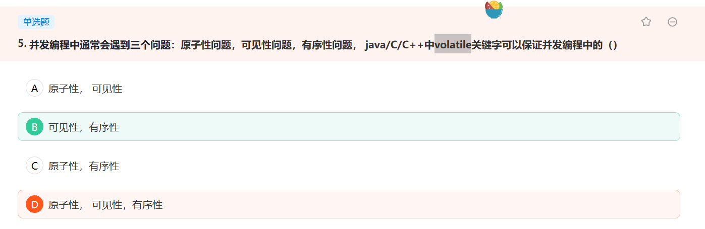
C 语言程序中的基本功能模块
函数
字符数组与字符串
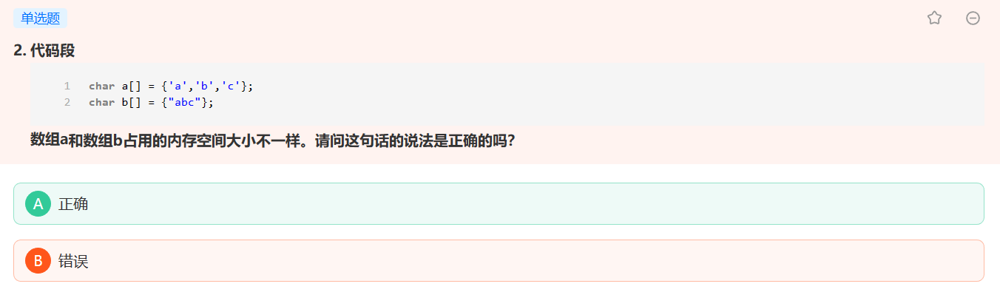
字符数组后面没有自动`\0’,字符串后面会加
8.19
import和include区别
这是什么年代的题了，C++11以后就已经摒弃import了。现在都至少C++14了，还出这种烂题。只能说牛客真的懒，不上进，题也不更新，歪瓜裂枣。